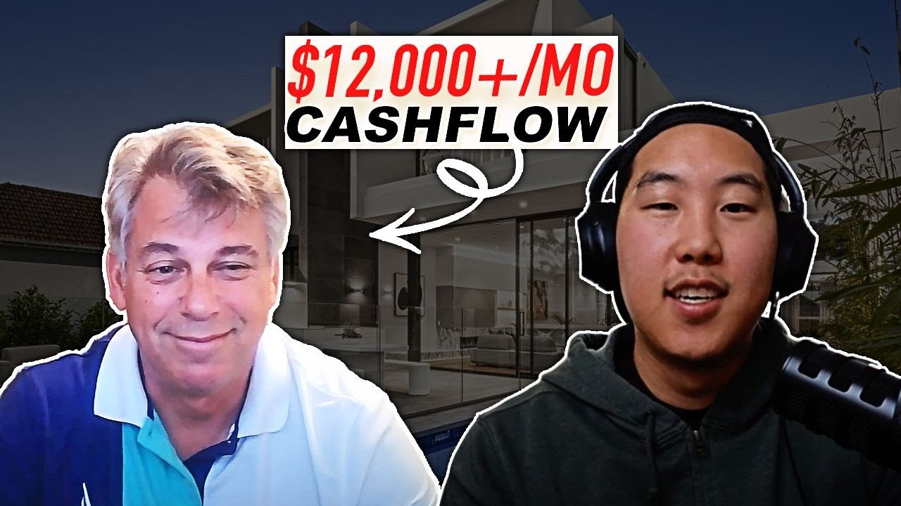

How Michael Locked Up 2 Deals in One Week for $12K/Month Cash Flow (2025 Case Study)
Michael, a serial entrepreneur who sold 5 companies, locked up 2 Airbnb deals in one week generating $12,000/month in the Space Coast, Florida. Learn his exact strategies, sales approach, and lessons for building passive income.

Michael earns $12,000 per month in projected cash flow from 2 Airbnb deals he locked up in just one week in Florida's Space Coast. After selling five companies and semi-retiring at 47, this serial entrepreneur found Legacy Investing Show through social media and had his first unit live and booked within 6 weeks. His first property received a booking within 5 minutes of going live, featuring ocean views and proximity to rocket launches.
This case study breaks down exactly how Michael built his Airbnb arbitrage business, including his 60% closing ratio landlord pitch, the parenting philosophy that raised financially literate children, and why a man who's friends with Gary Vee chose this program to learn passive income strategies.
In this article:
Quick Results: Michael's Airbnb Arbitrage Numbers
| Metric | Value | Context |
|---|---|---|
| Monthly Cash Flow | $12,000+ | Projected from 2 deals |
| Deals Secured | 2 in one week | Space Coast, Florida market |
| Time to First Unit | 6 weeks | From joining program to live listing |
| Time to First Booking | 5 minutes | After listing went live |
| Closing Ratio | 60% | On landlord pitches |
| Target ROI | 10%/month | On initial property investment |
| Cape Canaveral Property | $465,000 | Paid cash, built from ground up |
| Target Cash Flow Per Property | $3,000-$4,000 | After mortgage imputed at 8% |
| Goal | 10 properties this year, 30-40 long-term | Building passive income portfolio |
Michael's Background: From Serial Entrepreneur to Airbnb Investor
You don't need to start from scratch to benefit from Airbnb arbitrage. Michael is living proof that even wildly successful entrepreneurs can find value in learning new income strategies. With five companies sold and a construction business that employed 1,400 people, he brought decades of business acumen to his new venture.
Building and Selling Five Companies
Michael has never worked for somebody else in his entire career. When he semi-retired at 47 and briefly explored employment, interviewers told him he probably couldn't take orders from anyone. His response revealed a fundamental truth about entrepreneurship.
"I had 1,400 people below me and I had to answer to all of them. People don't realize as an entrepreneur you technically don't answer to anybody but you have to answer to your clients, to your vendors, to your finance people. You answer to a lot more people than if you've actually worked for an individual and only had one boss."
His portfolio spanned diverse industries, from construction with over a thousand employees to television stations. This breadth of experience taught him that the fundamentals of business success transfer across industries. The same principles that built construction empires would help him dominate short-term rentals.
Semi-Retirement and the Search for Passive Income
After selling his companies, Michael and his wife moved to Florida's Space Coast in Merritt Island to be closer to their son, a rocket scientist working in Orlando. Their daughter lives in Manhattan, giving them family ties across the country. With substantial savings from decades of entrepreneurial success, Michael wasn't looking for a job. He was looking for the best use of his time.
His approach to investment is fundamentally time-based. Every decision filters through a single question: what is the return on my time investment? Traditional investments like the stock market offer no control. Bank accounts, as the Silicon Valley Bank crisis demonstrated, aren't as secure as people believe. Real estate, specifically short-term rentals, offered something different: control over outcomes combined with attractive returns.
"The only easy day was yesterday. They used to call me Mr. Half Day because I would really only work half days in my entire business career. I just had to decide what I wanted to work: the first 12 hours or the second 12 hours."
Discovering Legacy Investing Show
Michael found Preston through social media, either TikTok or Instagram. What caught his attention wasn't aggressive sales tactics or promises of overnight riches. It was authenticity.
"I really enjoyed the genuine of you. You weren't selling us about 'hey you gotta buy this, you got to do this' which a lot of people are doing. It's like listen, I did this, it's work but I really enjoy it, and if you can take what I did and have a little grit, you can do it."
Michael has done Tony Robbins events and numerous self-help programs. He's friends with Gary Vee, describing him as someone with the same giving mentality who feels compelled to help everyone. In Preston, Michael saw someone with similar authenticity who would actually communicate with students despite having millions of followers.
Even though Michael had substantial resources, he recognized that the program's blueprint would have cost him hundreds of thousands of dollars in mistakes and trial-and-error learning on his own. The nominal cost was irrelevant. The value was in the shortcut to proven systems.
The Airbnb Arbitrage Journey: Michael's Timeline
Joining the Program
Situation: Semi-retired entrepreneur seeking passive income with control over outcomes.
When Michael joined Legacy Investing Show, he already had capital, business experience, and sales skills. What he lacked was the specific blueprint for short-term rental success. The program filled that gap efficiently.
Within the first weeks, Michael identified that finding properties wasn't the challenge. His sales background made landlord negotiations easy. The harder part was the operational details: setting up properties, handling last-minute issues, and ensuring every element was in place before guests arrived.
First Property Goes Live
Situation: First unit operational in 6 weeks, booked in 5 minutes.
Six weeks after joining the program, Michael's first unit went live on Airbnb. What happened next demonstrated the power of proper market selection and property positioning.
"In five minutes it got listed and that's it. We're ocean view, two minute walk to the beach, rocket launches behind you. It literally got sucked up in seconds."
The property didn't even have professional photos yet. Michael had taken quick snapshots himself, technically against best practices but proof that location and amenities matter more than perfect presentation in high-demand markets.
On the day of our interview, Michael had to reschedule because an unexpected situation arose. His listing mentioned a grill that wasn't yet on-site. The guest was arriving an hour and a half early. Within that window, Michael purchased, transported, and set up the grill. This is the reality of property management: small details add up, but they're manageable if you're prepared to act.
Plans to Scale to 10+ Properties
Situation: Building toward 30-40 units with people running them.
Michael's goal isn't a lifestyle business. He plans to scale to at least 10 properties this year, then continue growing to 30-40 units with staff handling operations. The first property is always the hardest. The worries, the learning curve, the question of whether it will work. After the first visitor, confidence replaces anxiety.
The local Airbnb and VRBO community welcomed Michael immediately. Fellow hosts in Cape Canaveral reached out after seeing construction, complimenting the property and welcoming him to what they consider the best location for short-term rentals.
His daughter's interest tells the story of generational entrepreneurship. She called from Manhattan asking to redirect her wedding savings into arbitrage investments so the money could grow before she needs it for a wedding years from now. The entrepreneurial spirit transfers.
How to Choose a Market for Airbnb Arbitrage: Michael's Space Coast Strategy
The Space Coast of Florida combines ocean views, rocket launches, and beach access into an irresistible package for short-term rental guests. Michael's market selection demonstrates how unique demand drivers can create sustainable competitive advantages.
Why the Space Coast Works for Short-Term Rentals
Michael and his wife chose Merritt Island, Florida to be near their rocket scientist son working in Orlando. This personal connection became a business advantage as they discovered the market's unique characteristics.
Demand Drivers:
-
SpaceX and NASA rocket launches: Visitors travel from around the world to watch launches
-
Beach access: Two-minute walk to the ocean
-
Year-round tourism: Florida's climate supports consistent bookings
-
Traveling healthcare professionals: Nurses, doctors, and technicians need extended-stay housing
-
Kennedy Space Center: Major tourist attraction driving regional visitors
The Numbers:
| Factor | Space Coast | Impact |
|---|---|---|
| Ocean view premium | Significant | Higher nightly rates |
| Rocket launch events | Regular | Spike bookings around launches |
| Beach proximity | 2 minutes | Premium positioning |
| Healthcare facility proximity | Regional hospitals | Extended stay demand |
Michael's Market Research Process
Before committing to any property, Michael emphasizes thorough research. His approach identifies common mistakes that waste time and money.
"You could be calling all these places, the owner will say 'great', then you find out the town doesn't allow it or they have 30 day minimums. What are you going to do? You've already signed a lease with the landlord."
Pro Tip: Michael recommends targeting standalone homes or townhomes in neighborhoods that explicitly allow short-term rentals. Condominiums frequently have HOA restrictions that make arbitrage impossible.
Airbnb Arbitrage Strategies That Actually Work: Michael's Playbook
The difference between profitable and unprofitable Airbnb arbitrage comes down to strategy. Michael's 60% closing ratio on landlord pitches demonstrates what's possible when you combine preparation with proper positioning.
Strategy 1: The Traveling Healthcare Professional Pitch
What it is: Positioning your rental business as serving traveling nurses, doctors, and medical technicians who need quality housing for variable stays.
Why it works: Healthcare professionals are reliable tenants with steady income. Their employers often cover housing. They need accommodations for anywhere from 3 days to 3 weeks, making them perfect guests for a furnished property. Landlords understand and respect this use case.
Michael's exact pitch:
"My wife is a nurse and she has seen many traveling nurses or RAs or doctors that really want to go with their families. Sometimes they come to an area for three days, sometimes they come for three weeks. They really want to be able to bring the family and go into a nice place to be able to enjoy the area. So I explain that's what our company does. Our company helps these nurses, these RAs, these techs to come into the area and enjoy Cape Canaveral, enjoy Cocoa Beach, enjoy Satellite Beach. Would you allow me to rent your place but also be able to give a service to those organizations to bring those first responders in? We have million dollar insurance coverage, we have no problem furnishing it, we have no problem paying in advance for rents."
Michael's Results with This Strategy:
-
60% closing ratio on landlord conversations
-
Multiple deals stacked up ready to move forward
-
Landlords respond positively to serving healthcare workers
Strategy 2: Hunter Mentality and Persistence
What it is: Approaching property acquisition as a numbers game requiring consistent outreach rather than giving up after a few rejections.
Why it works: Most aspiring hosts make 2-3 calls, get rejected, and conclude the business doesn't work. Michael, with decades of sales experience, understands that the fifth or sixth call produces results because you've improved through practice.
"I see a lot of people in the group just giving up and saying 'oh I called three or four and they turned me down.' Okay there's 20 others. Why aren't you making 20 calls? I would hunt the best areas, circle them, and just blast them."
Michael's Results with This Strategy:
-
Had properties stacked up ready to execute
-
Improved pitch quality with each conversation
-
60% closing ratio developed through repetition
Strategy 3: ROI-Based Investment Analysis
What it is: Treating every property decision as an investment equation, including imputing costs even when paying cash.
Why it works: Many investors leave money on the table by ignoring opportunity costs. Michael's construction and business background taught him to calculate true returns, not just apparent cash flow.
Michael's approach for his purchased property:
-
Paid $465,000 cash for Cape Canaveral property
-
Imputed an 8% mortgage to himself
-
Calculated returns after this phantom mortgage payment
-
Projects $3,000-$4,000/month net after all costs including imputed interest
"A lot of entrepreneurs and Airbnb people tend to leave that out. They say 'oh I own it so I don't pay a mortgage.' Yeah but you don't realize because you're not paying a mortgage that money should be making you some kind of money."
Michael's Airbnb Arbitrage Results: The Numbers
Michael projects $12,000+/month in cash flow from 2 properties with plans to scale to 30-40 units. Here's the complete financial breakdown of his Airbnb business.
Complete Financial Breakdown
| Category | Value | Notes |
|---|---|---|
| Purchased Property Investment | $465,000 | Cash purchase, built from ground up |
| Imputed Mortgage Rate | 8% | Self-imposed return requirement |
| Projected Net Cash Flow | $3,000-$4,000/month | After imputed mortgage and all expenses |
| Arbitrage Property Investment | $10,000-$20,000 | Per property setup cost |
| Target Monthly ROI | 10% | On initial property investment |
| Total Projected Cash Flow | $12,000+/month | From 2 properties |
Key Milestones Achieved
-
✅ First unit live in 6 weeks: Rapid execution from program enrollment to operational listing
-
✅ First booking in 5 minutes: Immediate market validation of property positioning
-
✅ 2 deals locked in one week: Multiple properties secured simultaneously
-
✅ 60% closing ratio: Consistent success rate on landlord negotiations
-
✅ Community welcome: Local hosts reached out to welcome him to the market
-
✅ 9-minute drive to property: Optimal distance for hands-on management while scaling
Airbnb Arbitrage Lessons: What Michael Learned
These five lessons come from a serial entrepreneur who sold five companies before turning to Airbnb. Each one reflects decades of business experience applied to short-term rentals.
Lesson 1: The Value of Time Over Money
The Mistake: Measuring investments only by dollar returns without considering time input.
What Michael Learned: Michael views every decision through a time lens. There are 24 hours in a day. Subtract 8 for sleep (though he gets only 6), 8 for work, and you have 8 hours remaining. How you invest those hours determines your trajectory. Cutting 30 minutes of screen time to research properties on Zillow compounds into life-changing results.
Why This Matters: A 10% monthly return on a $10,000 investment beats stock market returns. But the real calculation is return on time. Can you get 10 units producing returns while still living your life? That's passive income.
"Add up the hours. Who here sleeps eight hours? Not me, I'd be lucky to get six. But let's say I slept eight and then you work eight hours. That's 16 hours. What do you do with the other eight hours? Cut that screen time in half and dedicate it to going in Zillow."
Lesson 2: Be a Hunter, Not a Gatherer
The Mistake: Making a few calls, facing rejection, and concluding the business doesn't work.
What Michael Learned: In sales, hunters actively pursue opportunities rather than waiting for them to appear. The Airbnb arbitrage equivalent is calling landlords systematically, expecting most to say no, but knowing that persistence produces results. Michael had so many properties lined up that the challenge shifted to execution rather than acquisition.
Why This Matters: Most people in the program who struggle aren't facing a broken business model. They're facing a volume problem. Three calls isn't enough data. Twenty calls starts revealing patterns and improving your pitch.
Lesson 3: Teaching Financial Literacy Early
The Mistake: Assuming children will learn money management naturally as adults.
What Michael Learned: When Michael's children were 6 and 9 years old, he and his wife noticed they weren't respecting the money and opportunities they had. The solution was radical: require each child to pay $1,000 monthly room and board.
How could children earn this? Through an invoice system where every activity had value. Brushing teeth, tying shoes, making beds, doing dishes, completing homework. All had assigned values. At month's end, if they fell short, it rolled over. If they exceeded the amount, they kept the surplus as allowance.
"Within six months they got it. To date, both of my children, as soon as they got their jobs out of college, they called up and said they canceled their cell phones, canceled their insurance, canceled everything. They said 'you taught us to live on our own, we're off the payroll.' And to date they still send me every quarter their balance and how they're within their budgets."
Why This Matters: Both children were hired 6-8 months before graduating college. They understand that nothing is perfect, that budgets require living on 40% of income so you have reserves if circumstances change. This wasn't accidental. It was designed through early, consistent teaching.
Lesson 4: Don't Give Up After Three Calls
The Mistake: Interpreting early rejection as market feedback rather than skill deficiency.
What Michael Learned: The program members who struggle often share the same pattern in community discussions: "I called three or four landlords and they all said no." Michael's response is simple: there are 20 other landlords. Why stop at 4?
Each call improves your pitch. Like AI that learns faster with more data, salespeople improve with repetition. The calls that produce results come after you've refined your approach through earlier failures.
Why This Matters: Airbnb arbitrage is fundamentally a sales business. You're selling landlords on a proposition. Sales requires volume, iteration, and resilience. Three rejections isn't evidence of a broken business. It's evidence of a normal sales process.
Lesson 5: Invest in Yourself First
The Mistake: Believing self-help means reading books alone rather than getting proper training.
What Michael Learned: Michael has done Tony Robbins events and various self-help programs. His conclusion? There's no better self-help than actually helping yourself through action and proper training. The Legacy Investing Show program cost a nominal amount compared to what trial-and-error learning would have cost.
"How much would I ever have to pay or learn or go through trial and error to get to that point? For me to do what you gave me for your nominal amount would have cost me hundreds of thousands of dollars in headaches and mistakes. I would have paid twenty-five thousand dollars for it."
Why This Matters: Even with substantial resources, Michael recognized that buying a blueprint beats building one from scratch. The program provides scripts, systems, and community support that accelerate results. For someone without Michael's resources, this shortcut is even more valuable.
Best Tools for Airbnb Arbitrage: Michael's Tech Stack
Michael is building systems to manage multiple properties efficiently. Here's his approach to tools and automation.
| Category | Tool | Purpose | Why Michael Uses It |
|---|---|---|---|
| Listing Platforms | Airbnb, VRBO | Multi-platform exposure | Maximizes booking potential across platforms |
| Guest Communication | AI automation (exploring) | 24/7 response capability | Scaling requires systems that don't need his presence |
| Channel Management | Hospitable/similar | Unified calendar | Prevents double bookings across platforms |
| Training Reference | LIS video library | Rewatch for details | Quick learner who sometimes misses small details on first pass |
Program Video Library: The Overlooked Resource
What it does: Provides detailed vignettes on every aspect of property setup and management.
How Michael uses it: As a fast learner who sometimes skips details, Michael returns to specific videos when implementation questions arise. When a quick-set lock wasn't programming correctly, he rewatched the relevant section rather than waiting for community responses.
"Sometimes you have to go back two or three times to see what Preston said on this piece. I even asked a question in the chat and then I said I'm not going to wait for an answer, let me go back and watch the video over again. Oh I got it, let me go order the quick set for the door lock."
Pro tip: Small details matter enormously. The video that mentioned pressing pound after entering the code made the difference between a working and non-working garage door opener.
Michael's Advice for Airbnb Arbitrage Beginners
"There's no better self-help than helping yourself. And I think a lot of people miss that point."
If Michael were advising someone starting today, here's exactly what he would emphasize:
Step 1: Understand the Time Investment
There are 24 hours in a day. Most people spend 8 sleeping, 8 working, and fritter away the remaining 8. Success requires reclaiming portions of that discretionary time for activities that compound. Take 30 minutes from TV or phone screen time and redirect it to property research.
Step 2: Embrace the Sales Reality
Airbnb arbitrage requires selling landlords on your proposition. If you're not naturally in sales, the program provides scripts. But you still need to make the calls. Volume matters more than perfection. Your 20th pitch will be dramatically better than your first.
Step 3: Do Your Research Before Signing
Before committing to any property, verify that the town allows short-term rentals without restrictive minimum stay requirements. Confirm the property type works (standalone homes and townhomes, not condos with HOA restrictions). Understand demand drivers in that specific area.
Step 4: Have a Partner or Accountability System
Michael's wife listens to his landlord calls and provides feedback. She notices when he speaks too fast, says too many "ums," or doesn't clearly describe the proposition. Having someone outside the business provide perspective accelerates improvement.
"My wife will sit in the background and listen. She'll say you spoke too fast, you said too many ums, you didn't describe what you were doing. And that's her opinion of not being a business person."
Step 5: Trust the Process Through the First Deal
The first property is always the hardest. The worries of "are we doing it right" and "is this gonna work" dominate until you see actual results. After the first guest arrives and pays, confidence replaces anxiety. Then scaling becomes the focus.
Watch Michael's Full Interview
Video highlights:
-
0:00 - Michael's entrepreneurial background and five companies
-
5:30 - Why he chose Airbnb arbitrage over other investments
-
10:45 - The Space Coast market and property selection
-
15:20 - 60% closing ratio landlord pitch breakdown
-
20:00 - Teaching financial literacy to children at ages 6 and 9
-
25:30 - Systems for scaling to 30-40 properties
-
28:00 - Connection to Gary Vee and giving mentality
-
30:45 - Advice for beginners
Frequently Asked Questions
How much money can you really make with Airbnb arbitrage?
Michael projects $12,000+/month in cash flow from just 2 properties in the Space Coast, Florida market. His approach targets 10% monthly returns on initial property investments. For his purchased property (paid $465,000 cash), he projects $3,000-$4,000/month net after imputing an 8% mortgage to himself to account for opportunity cost of capital.
Results vary significantly based on market selection, property positioning, and operational execution. Michael's sales background and entrepreneurial experience contributed to his rapid success, but the systems he uses are learnable.
Is Airbnb arbitrage still worth it in 2025?
Based on Michael's experience, the fundamentals remain strong in the right markets. His first listing got booked within 5 minutes of going live, before he even had professional photos. The Space Coast's unique demand drivers (rocket launches, beach access, ocean views) created immediate interest.
Key factors for 2025 success include:
-
Choosing markets with unique demand drivers
-
Verifying regulatory environment before committing
-
Developing effective landlord pitches
-
Building systems that scale
What's the biggest risk with Airbnb arbitrage?
Michael views arbitrage risk as very low compared to traditional real estate investing. The downside is losing approximately $10,000 if everything goes wrong, compared to hundreds of thousands at risk with property purchases.
Risks Michael identifies:
-
Regulatory changes: Towns can modify short-term rental rules
-
Operational details: Small issues (missing grills, broken locks) require quick resolution
-
Lease terms: Signing before confirming STR allowance wastes time and money
The arbitrage model allows testing markets with limited capital before committing larger amounts to property purchases.
Start Your Airbnb Arbitrage Journey
Ready to build your own Airbnb arbitrage business like Michael?
Learn more about Legacy Investing Show
Related Success Stories
Helpful Resources
About Legacy Investing Show
Legacy Investing Show is Preston Seo's comprehensive Airbnb arbitrage training program. Since founding, the program has:
-
Trained 2,000+ students across the United States
-
Generated $10M+ in cumulative student revenue
-
Built an active community of short-term rental investors
-
Produced numerous students earning $10K+/month
Preston Seo created Legacy Investing Show to teach the exact systems that scaled his business, providing the mentorship, scripts, and community that accelerate success.
blog resources | Watch free training
This case study is based on Michael's video interview conducted in 2023. All statistics and quotes are directly from Michael's experience. Individual results vary based on market, effort, and capital invested.
Last updated: April 14, 2026
Preston Seo
Real estate investor and financial educator helping people build generational wealth through smart investing strategies.
Sources to check before you act
Check primary guidance and your own records before you treat any page as a final answer.
- Current IRS forms, instructions, and publications for the relevant tax year
- Your actual account statements, payroll reports, entity records, and advisor memos
Educational only. Results vary. Tax, legal, and investment decisions should be reviewed with a qualified professional who can see your full situation.
Frequently asked questions
How much money can you make with Airbnb arbitrage?
Michael locked up 2 deals in one week projecting $12,000/month in cash flow from the Space Coast, Florida. He targets 10% monthly return on his initial investment per property, with each property requiring $10,000-$20,000 to set up.
Is Airbnb arbitrage still profitable in 2025?
Yes. Michael got his first unit listed within 6 weeks of joining Legacy Investing Show, and it booked within 5 minutes of going live. His oceanview property near Cape Canaveral rocket launches proved immediate demand exists for well-positioned listings.
How long does it take to start making money with Airbnb arbitrage?
Michael went from joining the program to having his first unit live and booked in 6 weeks. His property got its first booking within 5 minutes of being listed, demonstrating how quickly returns can begin with proper market selection.
Do you need experience to start Airbnb arbitrage?
No real estate experience is required. Michael's background was in construction and TV stations, not hospitality. However, his sales skills gave him an edge when negotiating with landlords. The program provides scripts and systems for those without sales experience.
How much does it cost to start Airbnb arbitrage?
Michael invested $10,000-$20,000 per property for arbitrage deals and $465,000 cash for a property he purchased. Pure arbitrage typically requires first month's rent, deposit, and furnishing costs. Michael views the risk as very low compared to traditional real estate investing.
What is the best market for Airbnb arbitrage?
Michael chose the Space Coast of Florida (Merritt Island, Cape Canaveral, Cocoa Beach) for its unique combination of ocean views, rocket launches, and beach access. He recommends researching demand drivers like tourism, tech workers, and local events before selecting a market.
Is Legacy Investing Show worth it?
Michael, a successful entrepreneur who sold 5 companies, said he would have paid $25,000 for the program because the blueprint saved him hundreds of thousands in trial-and-error costs. He praised Preston's authenticity and the ability to re-watch training videos to catch details.
What's the difference between Airbnb arbitrage and buying property?
Arbitrage requires less capital ($10,000-$20,000 vs $465,000+ for purchase) and carries lower risk since you can exit leases. Michael does both - he bought one property with cash while pursuing arbitrage deals to scale faster with less capital at risk.
How do you convince landlords to allow Airbnb arbitrage?
Michael's pitch focuses on serving traveling nurses, RAs, and doctors who need quality housing for 3 days to 3 weeks. He emphasizes million-dollar insurance coverage, furnishing at his expense, and advance rent payments. His 60% closing ratio comes from strong research and sales skills.
Can you teach your kids about money and entrepreneurship?
Michael taught his children financial literacy at ages 6 and 9 by requiring them to 'pay' $1,000/month room and board through an invoice system. Every task had a value - brushing teeth, making beds, doing homework. Both children grew up to manage budgets meticulously and went off his payroll immediately after college.